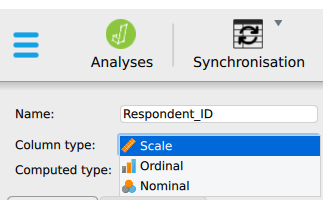
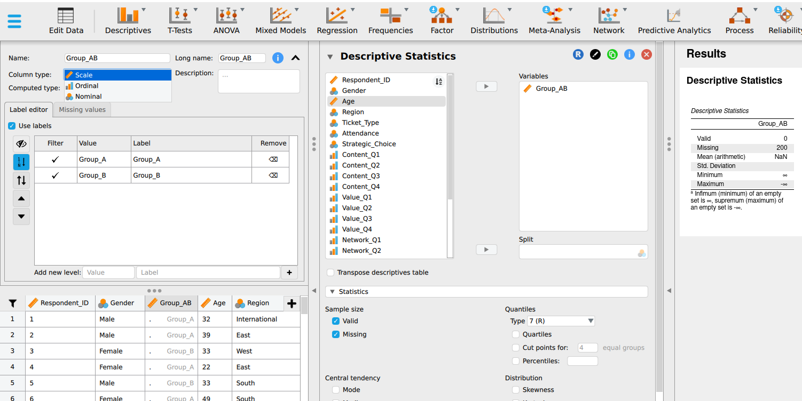
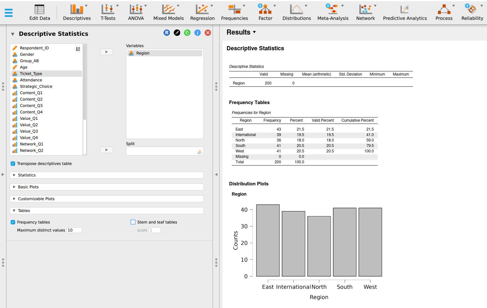
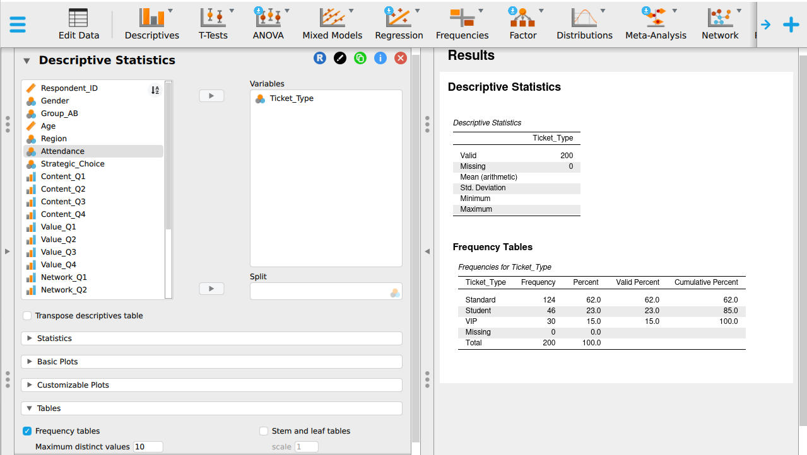
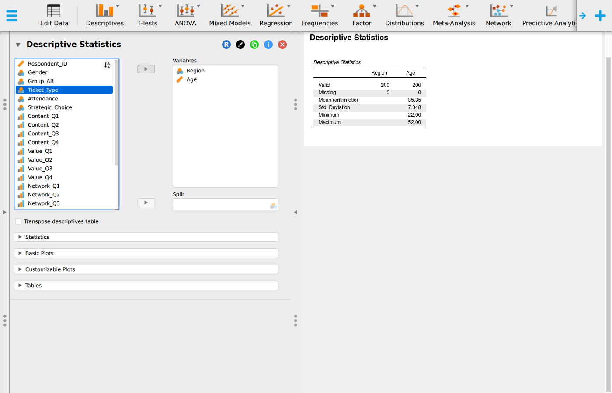

Part 2: Variables and displays
measurement scales, nominal scale, ordinal scale, interval scale, ratio scale, frequency distribution, cumulative frequency, choosing a chart, JASP
In the previous section, you learned to identify a case, a variable, and the boundaries of a sample. Those concepts define the structure of the dataset. This section addresses a different question regarding those same columns. You must determine the specific property that each variable measures. Once you establish this measurement level, the appropriate analytical steps will follow logically. The variable type dictates which summary statistics you may calculate and which graphical displays will accurately represent the data. If you misclassify a variable, the statistical software will still generate a numerical output. The software will produce the requested number even when that number is meaningless. This creates a risk you must manage yourself.
Types of variable
Before you choose any summary or any graph, settle what kind of variable you have. Almost every failed analysis you will see starts here.
Quantitative and categorical
Quantitative variables record an amount: Age, Spending, Waiting_Time_Mins. They are numeric, derive from counting or measuring, and support meaningful arithmetic.
Categorical variables record a group: Region, Ticket_Type, Attendance. They are usually words and they place each case into a class. Arithmetic on them lacks meaning even when the column stores numbers. Categorical variables are also called qualitative variables, and the two words mean the same thing.
The relevant test is whether adding two values produces a meaningful result. A column may contain digits, yet the values can remain labels. For example: averaging region codes 3 and 5 yields region 4, which is meaningless.
Discrete and continuous
Quantitative variables have a further division.
Discrete variables count distinct items. Examples include the number of complaints, the number of staff, and the number of visits. They take separate values, and no intermediate value exists between 3 and 4 complaints. A useful test: discrete variables are often described by phrases beginning with “the number of”.
Continuous variables measure quantities, such as waiting time, spending, or weight. Between any two values another value is possible. The measuring instrument sets the recorded precision, while the quantity itself is continuous. A wait recorded as 46 minutes was rounded to the nearest minute by the person logging it.
Although Waiting_Time_Mins in the teaching dataset is stored as whole numbers, it remains continuous. Time is continuous, but the recorded value depends on the precision of the instrument.
Age is the variable you are most likely to argue about. Recorded in completed years it looks like a count, and age itself is continuous, since you are continuously becoming older. Recorded this way it is usually treated as continuous for analysis, and either answer is defensible as long as you can say why.
This distinction determines the appropriate graph and reappears in chapter 3, where probability treats counts and measurements differently.
Worked example 1.6
Sorting a real file
Six columns from DMM_Teaching_Data_Full.csv: Gender, Region, Ticket_Type, Age, Return_Intention and Waiting_Time_Mins.
Sort each into quantitative or categorical, and say why. One variable resists clean classification.
| Variable | Type | Why |
|---|---|---|
Gender |
Categorical | Two named groups, no ordering |
Region |
Categorical | Five named groups, no ordering |
Ticket_Type |
Categorical | Three named groups, and any ordering you feel is about price, and the labels supply none of their own |
Age |
Quantitative, continuous | Measured, recorded in completed years |
Return_Intention |
Quantitative in storage, categorical in meaning | Recorded 1 to 5, and the numbers are labels for ordered positions |
Waiting_Time_Mins |
Quantitative, continuous | Measured, recorded to the nearest minute |
Return_Intention is the variable that resists classification, and the next section addresses this issue. It is stored as a number and its values are ordered. The gaps between them are unknown. Neither category fully describes it, so a finer classification is needed.
Independent and dependent variables
In any question that connects two variables, one is proposed as the explanation and the other as the outcome.
The dependent variable is the outcome you are trying to understand: satisfaction, retention, revenue. It is thought to depend on something else.
The independent variable is the one you think explains or predicts it: waiting time, region, training received.
“Does waiting time affect satisfaction?” makes satisfaction dependent and waiting time independent. Reversing them gives a different and usually nonsensical question, because satisfaction cannot change how long somebody already waited.
The roles come from the question. The variables themselves hold no role, so the same pair swaps places between two questions asked of one dataset. Waiting_Time_Mins is the independent variable in “does waiting affect satisfaction” and the dependent variable in “do waits differ by region”. Chapter 11 makes this decision explicit when fitting a regression.
Measurement scales
The way a variable is measured is called its level of measurement, and there are four levels. They run in increasing order of what they permit, and each level allows everything the level above it allows plus one new thing.
Statistical software records the level for every column and shows it as a small icon in the column header. Checking those icons is the first thing you will do in the tutorial, because a nominal variable read as scale lets you calculate an uninterpretable mean.

How JASP labels these four
The labels JASP uses map onto the four levels like this.
| Level of measurement | JASP label | Icon | Example in the teaching dataset |
|---|---|---|---|
| Nominal | Nominal | Three circles | Gender, Region, Ticket_Type |
| Ordinal | Ordinal | Ascending bars | Return_Intention |
| Interval | Scale | Ruler | Temperature in Celsius, if the file contained one |
| Ratio | Scale | Ruler | Age, Spending, Waiting_Time_Mins |
Read the last two rows of Table 2.2 carefully, because they are the reason this section lists four levels and your software offers three. JASP combines interval and ratio into a single Scale type, as most statistical software does. The tests you will meet from chapter 4 onward treat the two identically, so separating them would add no value for the software.
The distinction still governs what you may say. A Scale column of temperatures supports subtraction and a mean. A Scale column of waiting times also supports ratios, so ‘twice as long’ is a valid claim for waiting times but not for temperature. JASP calculates either value the same way and leaves the difference unflagged, so responsibility for correct interpretation stays with you.
This has one consequence for the tutorial. When reading a CSV file, JASP infers each type from the column contents, and it infers incorrectly often enough to check every time. Every numeric column arrives as Scale, including a column of group codes. A mean of group codes carries no interpretable meaning.

Setting the correct type is the first step of every analysis in this module and requires one click per column.
Nominal
Nominal variables consist of categories that name groups: Group_AB, Region, Gender, Ticket_Type. You can count how many cases fall in each category, identify the largest category, and calculate each category’s share of the whole. A nominal scale supports only these three operations. In JASP, you can visualise the results with frequency tables and distribution plots under Basic Plots.
The order of nominal categories is arbitrary. Placing East before West in a table is a display decision, and the regions themselves carry no natural order. A good test: if you could reorder the categories and the data would mean the same, the variable is nominal.

Ordinal
Ordinal variables consist of categories with a meaningful order, but the size of the gaps between categories remains unknown.
An ordinal scale provides all operations available for nominal data and adds rank order. You can sort the data, find the middle value, and report quartiles.
Return_Intention in the teaching dataset ranges from 1 to 5, where 5 means certain to return. A customer choosing 5 is more likely to return than one choosing 4, so the order is meaningful. Whether the step from 1 to 2 feels the same as the step from 4 to 5 is unknown, so the gaps remain unmeasured.
Because the gaps are unknown, averaging is an operation that ordinal data do not support. An average assumes equal steps. This scale is often mishandled because numeric coding makes arithmetic easy to perform, even when the measurement level does not justify it.
Interval
Interval variables are numeric, have equal gaps between values, and use a zero point defined by convention.
An interval scale adds measured distance to the operations available for ordinal data. Differences are meaningful, subtraction works, and you can take a mean. The measures of spread in Measures of spread become available here too.
Temperature in Celsius is the standard example. The gap from 10 to 20 degrees equals the gap from 20 to 30. Zero degrees Celsius is the freezing point of water. It does not indicate absence of heat. Temperatures below zero exist, and 20 degrees is not half as warm as 40 in any physical sense.
An interval scale does not support ratio comparisons.
Ratio
Ratio variables are numeric, have equal gaps, and carry a true zero that indicates absence of the quantity.
A ratio scale adds the operation of forming ratios. Age, Spending, Waiting_Time_Mins and every count are ratio. Zero minutes of waiting means the customer passed through without waiting. Therefore, 40 minutes is twice 20 minutes, and the coefficient of variation becomes meaningful.
Ratio is the most permissive scale, and most business measurements belong to it.
Choosing the scale
| Scale | Order | Equal gaps | True zero | Legitimate summaries |
|---|---|---|---|---|
| Nominal | no | no | no | Count, mode, proportion |
| Ordinal | yes | no | no | Count, mode, median, quartiles |
| Interval | yes | yes | no | All operations permitted by the ordinal scale, plus the mean and standard deviation |
| Ratio | yes | yes | yes | All operations permitted by the interval scale, plus ratios and the coefficient of variation |
Read Table 2.3 downward. Each scale permits everything permitted by the scale above it and adds one operation. Read it upward for what to do when you are uncertain: fall back to the more cautious level. A median calculated on a ratio variable is always defensible. A mean calculated on an ordinal variable needs an argument.
In practice, rating scales are often averaged. Survey reports, staff appraisals and product reviews all do it, and the results are often useful.
The defence runs like this. When four or more ordered items are combined into one score, the combined score behaves close enough to an interval measurement for the mean to be informative. The more items, and the finer the resulting score, the stronger the defence.
The teaching dataset contains one example of each kind. Satisfaction is recorded as a continuous score on a 1 to 5 scale and takes values like 3.72 and 2.57, with 143 distinct values across 200 customers. Such a fine score is treated as scale measurement in practice, and the mean of 3.81 is the usual summary.
Return_Intention is a single item recorded as whole numbers from 1 to 5. Averaging a single item has the weakest defence.
Your rule for this module: report the median and the distribution for a single ordinal item, say what you did, and record any average you take of an ordinal item. Reporting your choice lets the reader evaluate it independently.
Worked example 1.7
Choosing the measurement scale
Return_Intention is recorded 1 to 5, where 5 means certain to return. The 200 values are distributed as follows.
Return_Intention across 200 customers
| Value | Count |
|---|---|
| 1 | 5 |
| 2 | 24 |
| 3 | 56 |
| 4 | 65 |
| 5 | 50 |
| Total | 200 |
Identify its measurement scale and provide the summary you would present to a manager.
The variable is ordinal. The values are ordered and a respondent choosing 5 is more likely to return than one choosing 4. The gaps are unknown, so the mean needs the argument made in Measurement scales.
The defensible summary is the median, which is 4, together with the distribution. The distribution shows more than any single number does: 115 of 200 customers chose 4 or 5, and that 29 chose 1 or 2. A manager can act on both figures.
Averaging the column gives 3.66, which does not correspond to any response on the scale.
Classify each as nominal, ordinal, interval or ratio:
- Employee department
- Training completion status
- Priority level: low, medium, high
- Number of monthly customer complaints
- Temperature in a storage room in Celsius
- Monthly revenue
- Rating from 1 to 5 for ease of using an online form
- Year a branch opened
- Employee department, nominal
- Training completion status, nominal
- Priority level: low, medium, high, ordinal
- Number of monthly complaints, ratio, and discrete
- Temperature in Celsius, interval, because zero is a convention
- Monthly revenue, ratio
- Rating 1 to 5 for ease of use, ordinal
- Year a branch opened, interval. Years are ordered with equal gaps, and year zero is a calendar convention. Dividing one year by another gives a number with no meaningful interpretation. A branch opened in 2020 opened about 1,010 years after one opened in 1010.
Items 4 and 5 deserve attention. Both are numeric, but only one supports ratios. Twice 10 complaints is 20 complaints, while 20 degrees does not represent twice the warmth of 10 degrees.
Item 8 surprises many readers. It is an everyday quantity that is interval, although readers often assume it is ratio.
Variable type decides the method
Table 2.5 is the central reference for the module. Chapter 16 returns to it, and every test you choose between now and then is an application of it.
| Dependent variable | Typical methods | Covered in |
|---|---|---|
| Nominal | Chi-squared, logistic regression | Chapter 10 |
| Ordinal | Spearman, Mann-Whitney, Kruskal-Wallis | Chapters 5 and 9 |
| Interval or ratio, two groups | t-tests | Chapters 4 and 5 |
| Interval or ratio, three or more groups | ANOVA | Chapter 5 |
| Interval or ratio, predicted from another | Correlation, regression | Chapters 9 and 11 |
You are not expected to know these methods yet. You should notice that the choice runs from left to right. The variable type comes first, and the method follows from it.
Coding and recoding variables
Categories are often stored as numbers so that software can process them. Group_AB might be coded 1 and 2. The code is a label, and averaging it produces an uninterpretable result. An average Group_AB of 1.44 can reveal group proportions only after reverse calculation, and it conveys no direct meaning.
This is why you start every analysis in this module by checking how the software read each column. Software reading a CSV file inspects the contents and infers the variable type. It reads Group_AB coded 1 and 2 as a scale variable because the column contains numbers, and it calculates a mean, leaving the error unflagged.
Recoding groups values into fewer categories: turning waiting times into bands of under 30 minutes, 30 to 60, and over 60. Recoding always loses information, so use it only when the band boundaries correspond to meaningful thresholds.
If the service standard is 60 minutes, a band boundary at 60 minutes is meaningful because it separates customers who received the promised service from customers who did not. Bands chosen only to make a chart appear tidy may lead readers to see a pattern created by the boundaries.
Frequency distributions
A frequency distribution counts how many cases fall in each category or interval. It is the first display to build for any categorical variable and is often the only summary a manager requires.
Here is Ticket_Type across all 200 respondents in the teaching dataset.
Ticket_Type, 200 respondents
| Ticket type | Frequency | Relative frequency | Percentage |
|---|---|---|---|
| Standard | 124 | 0.620 | 62.0% |
| Student | 46 | 0.230 | 23.0% |
| VIP | 30 | 0.150 | 15.0% |
| Total | 200 | 1.000 | 100% |

Frequency is the count. Relative frequency is the count divided by the total:
\[\text{relative frequency} = \frac{f}{n}\]
For standard tickets that is \(124 \div 200 = 0.620\). Percentage is relative frequency multiplied by 100, so 62.0 per cent.
Two checks apply to every frequency table you build. The frequencies must sum to \(n\), and the relative frequencies must sum to 1. If either check fails, some cases are missing a value or the arithmetic contains an error. Identify the cause before presenting the table.
Relative frequency allows comparison between groups of different sizes. It is usually the more useful column. Knowing that 124 customers hold standard tickets has limited meaning until you know the total is 200.
Grouped frequency distributions
Continuous variables require intervals because most values appear only once or twice, and a table of raw counts would be as long as the dataset.
Three rules keep a grouped table defensible:
- Every value must fall in exactly one interval. Intervals that overlap double-count, and intervals that leave gaps lose cases.
- Intervals should have equal width unless there is a stated reason for unequal width.
- Five to fifteen intervals usually reveal the distribution shape without adding false detail.
Here is Waiting_Time_Mins from the teaching dataset, in bands of ten minutes.
Waiting_Time_Mins in ten-minute bands
| Waiting time, minutes | Frequency | Relative frequency | Cumulative frequency |
|---|---|---|---|
| 10 to under 20 | 3 | 0.015 | 3 |
| 20 to under 30 | 14 | 0.070 | 17 |
| 30 to under 40 | 47 | 0.235 | 64 |
| 40 to under 50 | 62 | 0.310 | 126 |
| 50 to under 60 | 53 | 0.265 | 179 |
| 60 to under 70 | 19 | 0.095 | 198 |
| 70 to under 80 | 1 | 0.005 | 199 |
| 80 to under 90 | 0 | 0.000 | 199 |
| 90 to under 100 | 1 | 0.005 | 200 |
| Total | 200 | 1.000 |
Note the wording of the boundaries. “20 to under 30” is unambiguous. “20 to 30” followed by “30 to 40” leaves a value of exactly 30 in two places at once, and different people resolve that differently, so two analysts get two answers from the same file.
Note also the band with a frequency of zero. An empty band between two occupied bands provides information. It indicates that the 90-minute wait stands apart from the rest of the distribution. Deleting the empty row would hide this fact.
Cumulative frequency
The cumulative frequency column running down the table answers a different question from the frequency column. The frequency column answers “how many waited between 30 and 40 minutes”. The cumulative column answers “how many waited under 40 minutes”.
Each cumulative entry is the running total of all frequencies up to and including that row.
From Table 2.7, 64 of 200 customers waited under 40 minutes, which is 32 per cent. In addition, 179 of 200, or 89.5 per cent, waited under an hour, so 21 customers waited an hour or longer.
If the service standard is 60 minutes, that single number answers the manager’s question, and it comes from the cumulative column.
Plotting cumulative frequency against the upper boundary of each interval gives a curve that rises to the total, sometimes called an ogive. Reading across from 50 per cent gives the median. Reading across from 25 and 75 per cent gives the quartiles. This is the most direct way to read a percentile from a distribution. Build the cumulative column even when nobody asks for it.
Using Table 2.7:
- What proportion of customers waited 40 minutes or more?
- What proportion waited under 30 minutes?
- If the service standard were tightened to 30 minutes, what proportion would breach it?
- Explain why the cumulative column answers question 3 more directly than the frequency column.
- 40 minutes or more: \(200 - 64 = 136\) of 200, or 68 per cent. Subtracting the cumulative figure at the boundary from the total is quicker and safer than adding five frequencies.
- Under 30 minutes: the cumulative figure at that boundary is 17 of 200, or 8.5 per cent.
- 91.5 per cent would breach a 30-minute standard, because 8.5 per cent met it.
- The cumulative column already answers “how many up to here”. A service standard takes exactly that form. The frequency column would need three intervals added together first, and each addition creates a chance for an arithmetic error.
Displaying data
The appropriate graph depends on the variable type and the question.
| Purpose | Variable type | Graph |
|---|---|---|
| Compare category counts | Nominal or ordinal | Bar chart |
| Show parts of a whole | Nominal, few categories | Pie chart |
| Show the distribution of a measurement | Continuous | Histogram |
| Compare distributions across groups | Continuous by category | Boxplot |
| Show change over time | Continuous over an ordered period | Line chart |
| Show the relationship between two measurements | Two continuous | Scatterplot |
| Show counts across two categories | Two categorical | Grouped or stacked bar chart |
Bar charts have gaps between bars, because the categories are separate. Histograms have none, because the intervals are continuous and each one ends where the next begins. The difference is meaningful. A histogram drawn with gaps implies the data are categorical.
Pie charts work only for a small number of categories that sum to a whole. Beyond about five slices, the eye cannot compare angles well, and a bar chart is preferable. Ticket_Type, with its three categories, is a suitable candidate. Region, with five categories, is borderline.
Grouped and stacked bar charts show two categorical variables together. Grouped bars sit side by side and compare categories within a group. Stacked bars sit on top of one another and show composition. Grouped bars are better for comparing categories. Stacked bars are better for showing proportions.
Boxplots summarise a distribution through quartiles and flag distant values. This makes them the most useful single display for comparing three or more groups at once.

Stem-and-leaf display
A stem-and-leaf display keeps every original value while showing the distribution shape. The stem is the leading digit or digits. The leaves are the final digits, written in order along the row.
Here are the 17 shortest waits in the teaching dataset, those under 30 minutes.
1 | 2 4 9
2 | 0 1 5 5 5 7 8 8 8 8 9 9 9 9
Read the first row as 12, 14, 19. Read the second as 20, 21, 25, 25, 25, 27, 28, 28, 28, 28, 29, 29, 29, 29. Every original value remains present and ordered, and the shape is visible in the length of the rows.
A stem-and-leaf display resembles a histogram while retaining the raw data. Use it for small datasets and when checking individual values by hand. With 200 cases it becomes unwieldy, so the grouped table and the histogram are preferable.
Data display errors
Four faults account for many misleading charts.
A truncated axis. A bar chart whose vertical axis starts at 90 turns a difference of two units into a large visual gap. Bars are read by length, so the baseline should be zero. A line chart, read by slope, may start elsewhere if the baseline is labelled.
Unequal intervals presented as equal. A histogram whose bars cover 5, 10 and 25 units of width but are drawn the same size misstates the distribution. The eye reads area, so unequal widths require unequal areas.
Too many slices. A pie chart with twelve categories communicates little because few readers can rank twelve angles by eye.
A missing denominator. The statement “complaints doubled” has one meaning out of 10 customers and another out of 10,000.
Worked example 1.8
Choosing the graph
A manager wants to know whether satisfaction differs across the five regions.
Choose the display that answers the question and explain what the obvious alternative would hide.
Satisfaction is a combined scale score and Region is nominal, so the question is about a distribution across groups. A boxplot with one box per region shows centre, spread, and distant values together and answers the question directly.
A bar chart of mean satisfaction by region would show five numbers and hide the variation. The manager needs to see that variation. If one region has a mean of 3.9 built from consistently moderate scores, and another has a mean of 3.9 built from very happy and very unhappy customers in equal measure, those are different management problems. The bar chart draws them identically.
Choose the most suitable display, and say why:
- The share of respondents in each of three ticket types.
- Whether spending and satisfaction move together.
- How waiting time is distributed across all 200 respondents.
- Whether complaint volume has risen over twelve months.
- Whether return intention differs between two customer groups.
- Bar chart. Three named categories are compared by count. A pie chart would also work with three slices if the question concerns share.
- Scatterplot. Spending and satisfaction are both continuous, and the question asks how they move together.
- Histogram. Waiting time is continuous, and the question asks how its values spread across the 200 respondents.
- Line chart. The twelve months form an ordered sequence, and the question asks about movement across it.
- Boxplot, one box per group. It compares centre and spread together. A bar chart of means would hide that information.
Section summary
Variable type determines what you may calculate and what you may draw. Frequency answers how many cases fall in a category. Cumulative frequency answers how many cases fall up to a boundary, and the second is usually closer to the manager’s question. Bar charts compare category counts. Histograms show the distribution of a continuous variable. Boxplots compare distributions across groups. Scatterplots show the relationship between two continuous variables. A truncated axis is a common way to mislead without stating a falsehood.